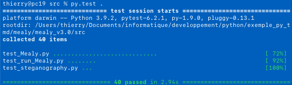

Mealy project - Programmer's guide
Version 3.0 - 15/4/2021
Role
This file describes Mealy project features useful to modify it.
Unit test of Mealy machine implementation
In a terminal window
- First install package py.test : pip3
install pytest
- go to Mealy project directory
- launch py.test .
- All is ok if you see :

I18N and L10N : Localisation in a new language
In this chapter, you will find how to add or translate messages of GUI
python sources in a foreign language.
Mealy project uses I18N (Internationalization) based on GNU utilities and
python package gettext.
Adding a new string in python source : I18N
All strings in GUI must be written in English and surrounded by _("") : ie :
self.messageLabel = Label(statusFrame,
text=_("Ready !"))
All message added have to be translated in files locale/<CODE>/LC_MESSAGES/messages.po,
else they will appear in english.
Translate messages : L10N
- Get the ISO 639-1 code of the target language on GNU
gettext website.
- In example for German : de.
- Create a directory locale/de/LC_MESSAGES
- Copy in this directory the french file:
locale/fr/LC_MESSAGES/messages.po
- Open locale/de/LC_MESSAGES/messages.po
in a text editor
- msgid is the english sentence, modify all msgstr lines with the
translation in target language, here for German :
msgid "Ready !"
msgstr "Bereit !"
Inside Mealy machine
A Mealy
machine is a ciphering method developed by George H. Mealy in 1955.
Algorithm
Respecting Kerckhoffs's
principle, algorithm is well know and public : https://en.wikipedia.org/wiki/Mealy_machine.
It uses a state transition encoding table TTe and a coding table TCe.
Ciphering
Given an alphabet of allowed
characters, cyphering is achieved by using two dimensions coding
matrix :
- TCe[mealy.nbState][len(alphabet)]
: that gives cyphered characters.
- TTe[mealy.nbState][len(alphabet)]
: that gives next state of the machine.
The machine being in a defined state,
each time a character char to
cypher arrives, the TCe(state, char)
gives the cyphered character and the TTe(state,
char) table give the next state
of the machine. Ciphered characters and machine state depend on those
ciphered before it.
Key and additional text key files are used to shuffle the alphabet used
at the first state.
Alphabet is composed of alpha-numerics characters and the following
special chars : !\"#$%&'()*+,-./:;<=>?@[\\]^_`{|}~ \t\n.
It can be extended by modifying program property file key
MealyMachine/allowedCharsExt (default value) :
ñí´ªÖ‡„·‚¿√¡¬ÈËÍÎ…» ÀÓÔŒœ˘¸˚Ÿ‹€Ùˆ‘÷úÊÁå∆«
Deciphering
Deciphering is done by using a reverse machine based on tables TTd and TCd
built according TTe and TCe such as :
state i : a state of the machine ; x : a char of alphabet ; z : a cyphered
char.
if TCe(i, x) = z, then TCd(i, z) = x and TTd(i, z) = TTe(i, x).
The number of states of state is defined and can be change by key mealy.nbState
in Mealy.properties
text file. Value : 100 states
Building matrix in Mealy project
One or two secret keys can be given by user :
- The key1 is an integer in the range [0; sys.maxint]. On my machine [0;
9223372036854775807]
It is used as the seed of a python builtin random number generator to
shuffle TTe table withe the random.shuffle() method.
- The second optional key2 is composed of characters. It is used to
modify alphabet order by putting key2 at the beginning of alphabet.
It is read in a user input or in a file, by taking only alphabet
characters.
Other guides
Author - licence
Author : Thierry Maillard (TMD)
Licence : GPLv3
Copyright (c) 2021 - Thierry Maillard
This file is part of Mealy project.
Mealy project is free software: you can redistribute it
and/or modify
it under the terms of the GNU General Public License as
published by
the Free Software Foundation, either version 3 of the
License, or
(at your option) any later version.
Foobar is distributed in the hope that it will be useful,
but WITHOUT ANY WARRANTY; without even the implied
warranty of
MERCHANTABILITY or FITNESS FOR A PARTICULAR
PURPOSE. See the
GNU General Public License for more details.
You should have received a copy of the GNU General Public
License
along with Mealy project. If not, see <http://www.gnu.org/licenses/>.